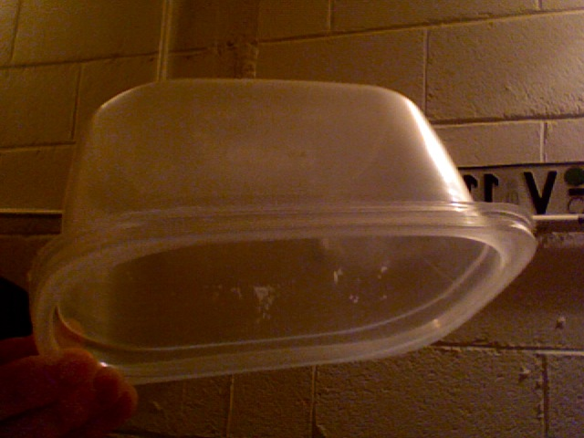
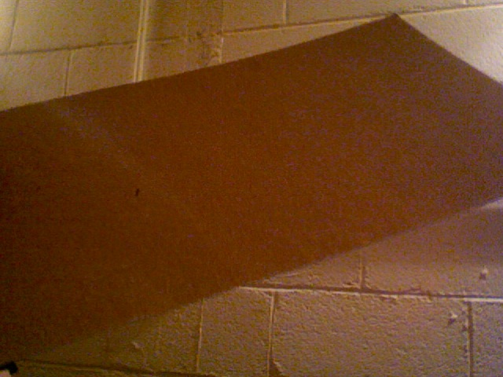

23 spiders ...
or, how to remove bugs and influence people
23 spiders, 1 mosquito & 1 beetle. That's the the exact number (or pretty close for the spiders) of bugs that I removed from my place since Monday. Until this week, I'd been away for a while, though I did check in a few times. But upon returning, I gradually noticed quite a few more cob webs than before...
So I found an old plastic container (featuring a nice rectangular shape with "rounded corners") ...

... and a thin piece of cardboard that was just sitting around -

And ... first I carefully trap the insect by placing the container over (or around) it. Then, I'll slide the cardboard over the top (or bottom), creating a nice, safe transport result :)
Once outside, I'll hold the container fairly close to the ground (except with mosquitos), remove the cardboard, and give a little (insert motion here) shake:
"Goodby my friend", you'll say. And as you go back inside, you'll gamely add "you don't have to be killed, but you can't stay here" (to tune of "closing time")....
I also must remark on the feeling it gives me afterward. It just feels good knowing that right now those insects are out in "the real world" (a.k.a. nature), doing something else. I'm sure they are having a new adventure of sorts, and most likely enjoying the challenges involved :)